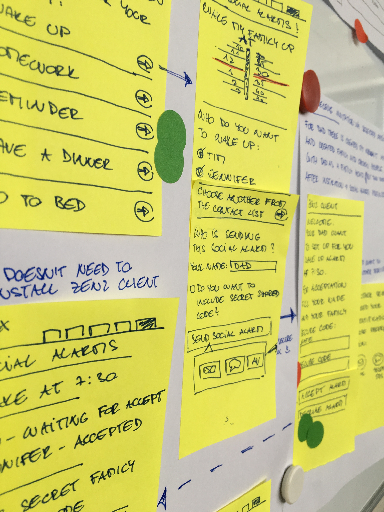
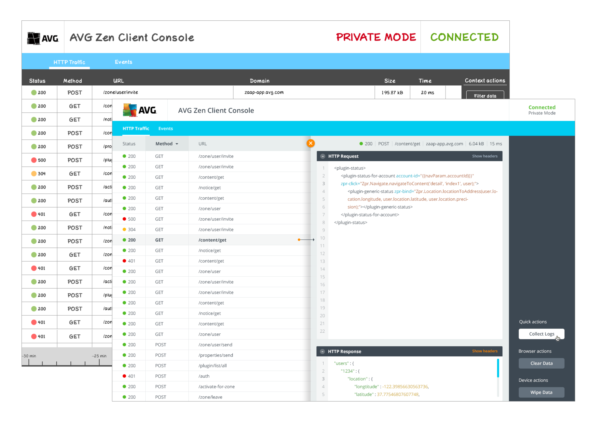
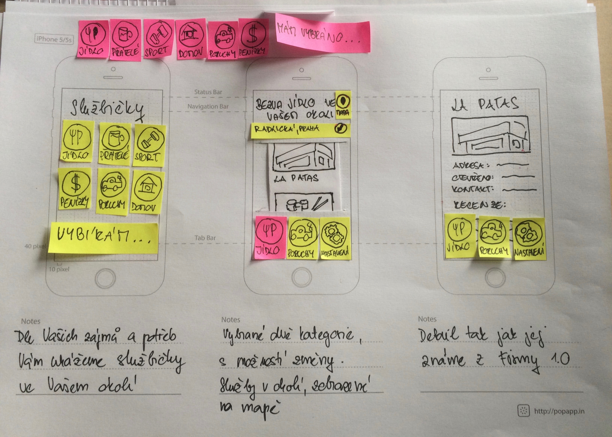
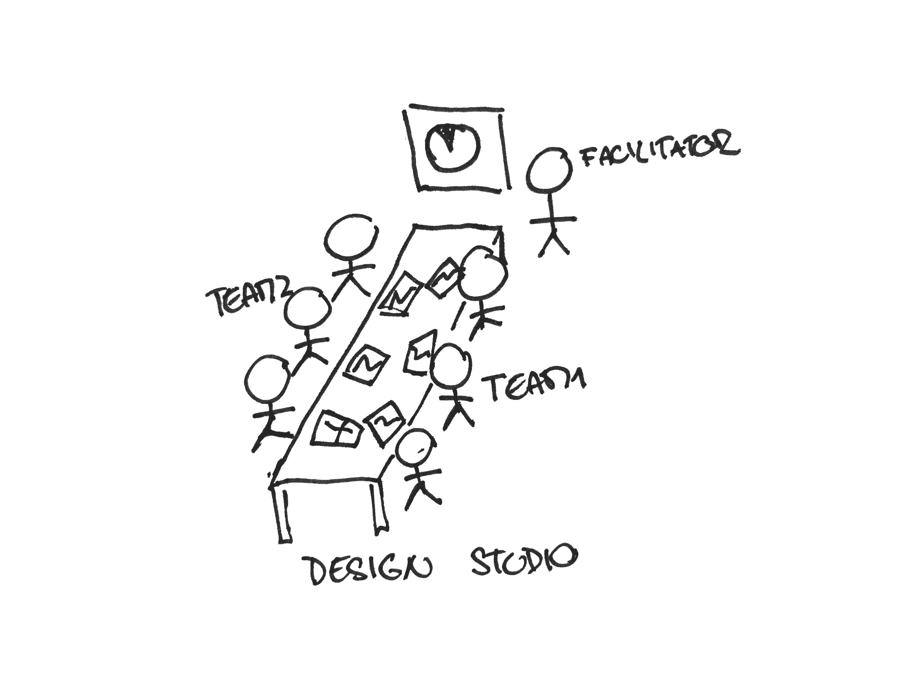
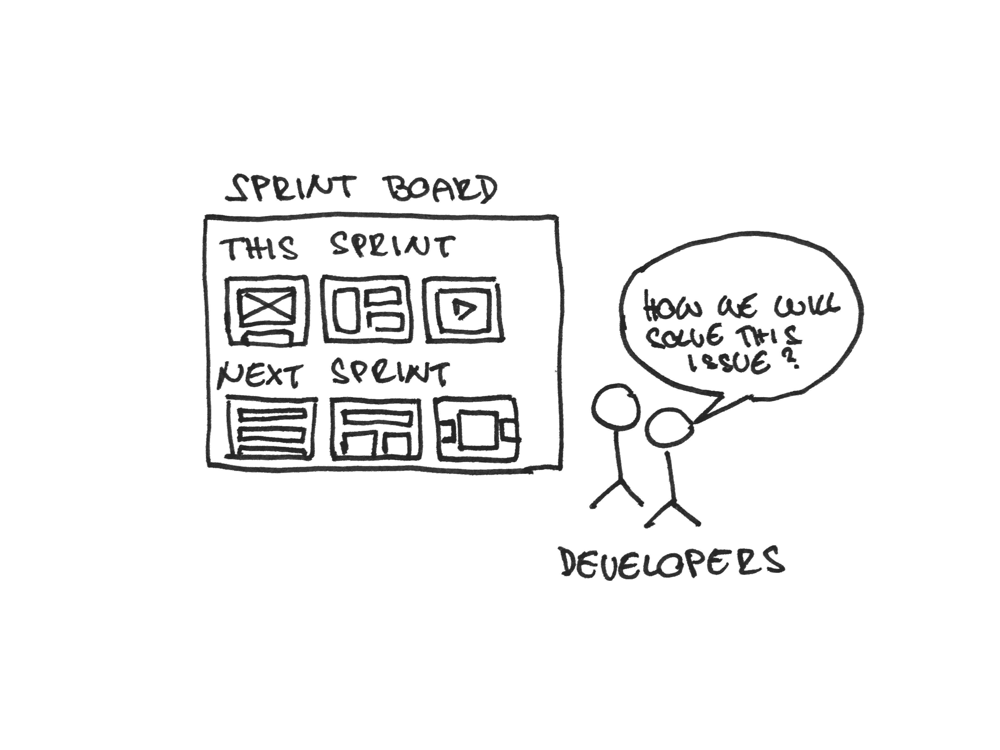
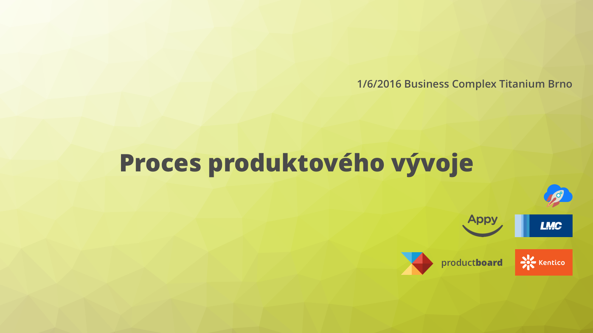

Designer & Dreamer
Hi, my name is Dominik and I'm a young designer, originally from the Czech Republic. Do you want to know more about me?
Creativity, Passion & Innovation
I've been seeking creativity my whole life. As a child, I used to want to be a game designer and thus I spent my childhood with drawing concepts for my own RPG game.
Later, drawing game characters was replaced with writing short stories and my dream was being a great storyteller. Do you know magic stories are around us everywhere?
 Storyboards – storytelling with pictures
Storyboards – storytelling with pictures
Because earning money by writing books is hard, I found harder way – I fell in love with dance as the best way how to express your feelings and emotions.
Eventually all this has brought me to design and my passion for creating right products for right people.
I love finding new ways how to solve problems. It doesn't matter if the nature of problems is more business, design or even development.
Mind, Process & Tools
For being a good designer, I've never stopped learning new things and forming my mind set. I read news, articles and books – The Design of Everyday Things by Donald. A. Norman is a book which has influenced me the most.
I'm always trying to push my boundaries further and further and have an objective opinion. Also, when I stuck and can't find a solution, I step back to see the big picture.
I've participated in some Design Sprints before it got hype. And I'm responsible for spreading GV's Sprint according to Sprint book in my current job.
 Design Sprint – an intensive solution for big problems
I'm continually looking for better tools and process. Although, pen and paper is basic and I'm trying to improve myself in sketching, I love Sketch, especially in combination with Craft and some other selected plugins.
 Sketch – a great tool for almost every design phase
I have many experiences with prototyping and I'm able to choose the right tool based on necessary fidelity – pen & paper, Marvel, InVision, Flinto, Axure, Framer and even HTML/CSS/JS. No problem to learn new things.
 Paper prototype – low fidelity, fast creation
It's important to create products for people and solve their goals and needs. I have experiences with explorative research and with usability studies – user and/or customer is always on the first place.
My first interview ever was with my friend. It was an assignment to the first course from Interaction Design specialization, which I've been taking on Coursera.org.
Explorative research – find what your customers want
Communication & Relationships
Communication is really important for creating great products and it's necessary to maintain good relationships. There is no need for a gap between designers and developers.
I'm a highly positive person and I always do my best to help others. I have great relationships with my colleagues and I'm looking for new ways how to improve communication between team members.
I ran several Design Studio workshops, it's a great approach how to get closer with a team and get shared ownership over a project.
 Design Studio – a creative workshop to get shared ownership
Also, I'm evangelist in using a physical board with design-related stuffs, called Sprint Board in a team office. It's a great form how to ceaselessly present your work to developers so they could feel involvement. And moreover, developers use Sprint Board for better communication between themselves.
 Sprint Board – a physical board with design-related stuffs
My last success is spreading a great tool for handover design to developers without a requirement for creating design specifications. I love Zeplin.io.
Recently I organized a meetup for product people. There were three speeches by four speakers and it was focused on product development process. It was quite successful, around sixty people came and most of them were satisfied.
 Product meetup – it's important to share knowledge